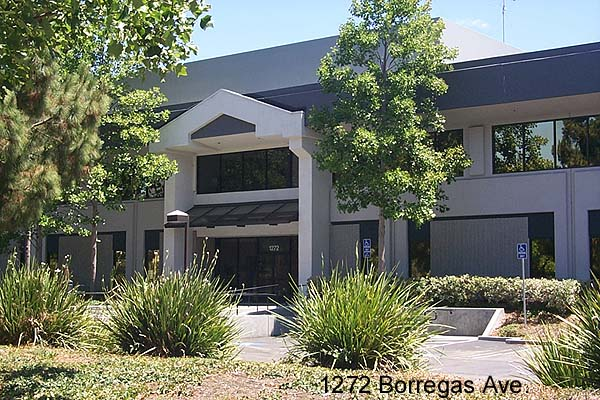

Atari's Engineering building at 1272 Borregas
Ave was built in 1978. This was one of the most
sought after buildings to work in at Atari,
not just for the excitment of designing future products
but also for its rather "unique" co-ed
hot tub. Thats right, inbetween the Mens and Womens
bathrooms was an adjoining center hot
tub room for staff to relax and unwind.